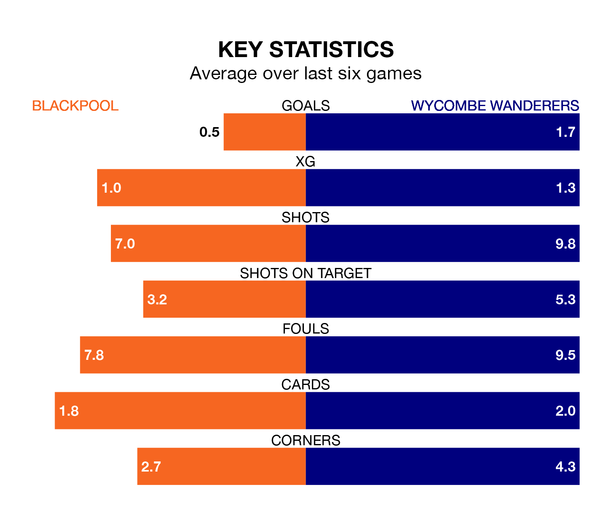

Wycombe Wanderers travel to Blackpool on Monday in EFL League One.
The visitors come into the game on the back of a defeat in their last match, having lost to Portsmouth 3-1 at home, with a goal from Matt Butcher.
The Seasiders also lost their last match, 1-0 against Derby County.
In the last 10 years, Blackpool and Wycombe have played each other on eight occasions. Wycombe won two of them and they drew six times.
On average, the Seasiders scored 0.6 goals and the Chairboys 1.0 in those matches.
Their last meeting was on September 16, when Wycombe won 2-0 at home.
With 57 goals in 40 games so far this season, Blackpool are scoring more than average in the league with 1.4 goals per game. And they are conceding fewer than average, letting in 43 goals at a rate of 1.1 per game.
Wycombe, meanwhile, are average scorers, with 1.3 goals per game. They have also conceded 1.3 goals per game.
In Jordan Rhodes, the Seasiders have one of the league's sharpest shooters so far this season. He has notched 15 goals in 29 appearances, to sit fifth in the scoring charts.
His goal rate of one every 152 minutes is much quicker than that of Luke Leahy, Wanderers' top scorer with a goal every 388 minutes, and a total of eight goals in 37 games.
The hosts are ninth in the table after 40 games, of which they have won 17 and drawn nine, earning 60 points.
The Chairboys are five places behind Blackpool in 14th, with 13 wins and 11 draws putting them on 50 points.
Blackpool are in mixed form in EFL League One, with two wins and a draw from their last six games.
With four wins and two losses over that period, the away team's form is better – they have taken 12 points from 18, compared to the Seasiders' seven.
Monday's match will be refereed by Ross Joyce, who has taken charge of 15 EFL League One games so far this season, issuing four red cards and booking 64 players. He has awarded two penalties.
The last Blackpool game Joyce refereed was a 3-1 home win against Bristol Rovers on December 23. His last Wycombe match was their 4-1 win away at Fleetwood Town on October 7.
Updated: 10:31 (UTC), 31/03/24